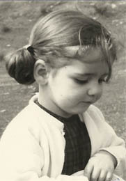
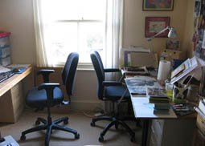
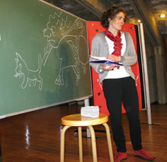
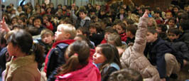

Esta soy yo
Esta también

Este es mi estudio. Cuando la inspiración me da la espalda dejo la mesa de escribir (a la izquierda) y me traslado a la de dibujar (a la derecha). Si esto tampoco funciona, voy al armario de la cocina a ver si queda chocolate.

Echando un discursito en la entrega de los Premios Edebé 2004


Aquí estoy en un colegio contando uno de mis cuentos. Suelo acompañar la narración con dibujos que hago sobre la marcha. Debo andarme con mucho ojo porque los chavales no me pasan un descuido en la pizarra. (Nada de protagonistas con cuatro dedos en una mano o brujas sin pelos en la verruga de la nariz.)